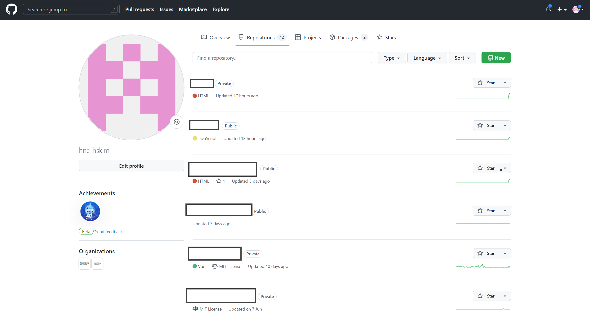
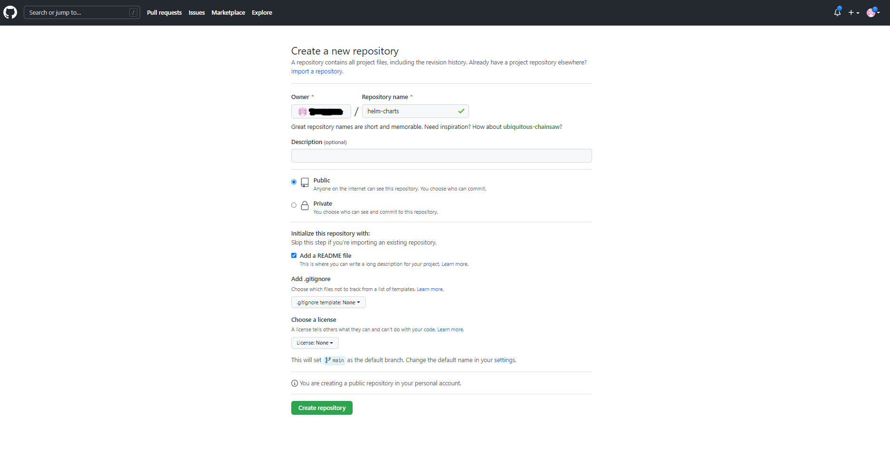
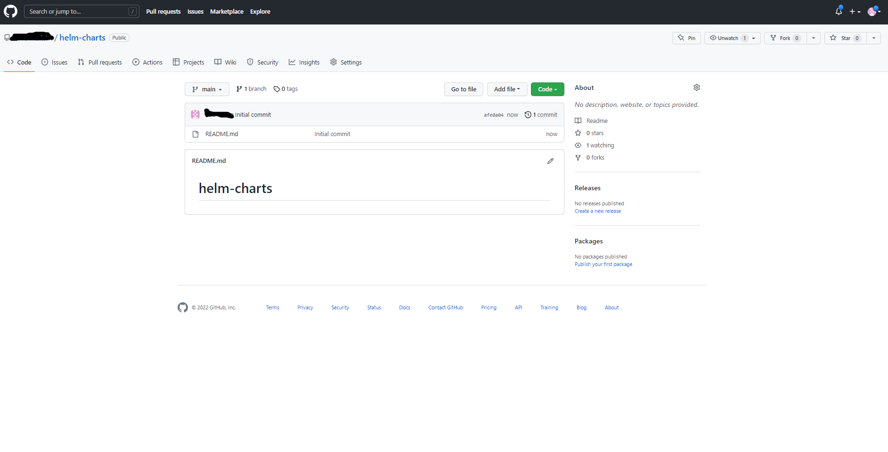
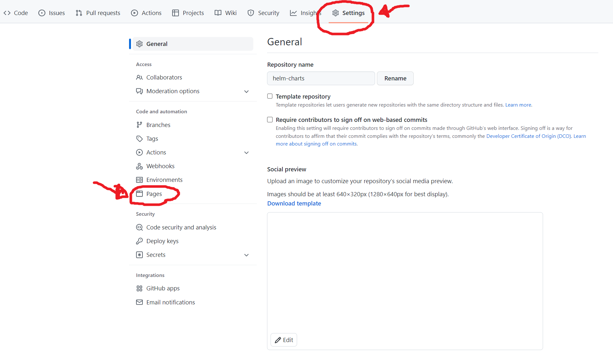
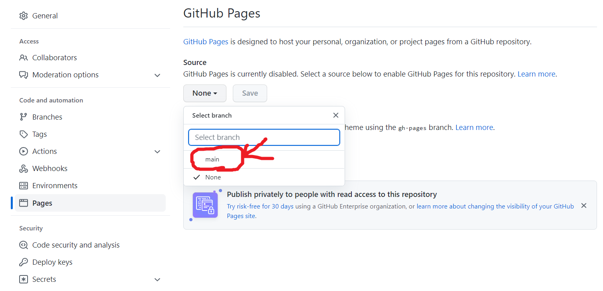
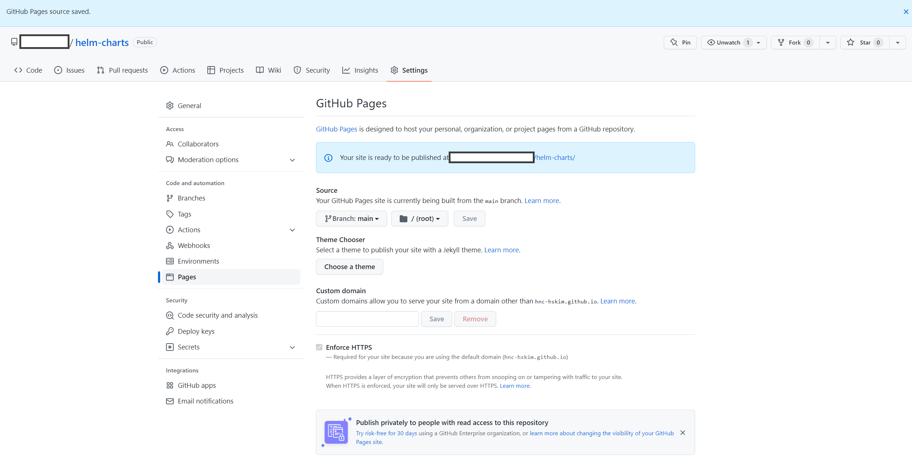
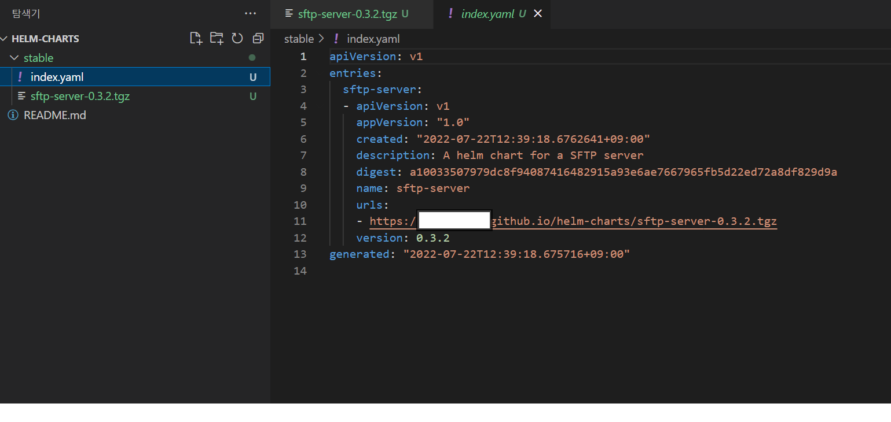

리파지터리 홈 탭 메뉴의 Settings를 선택한다.
좌측 메뉴에 Pages를 선택한다.

main 브랜치를 선택후 save 버튼을 클릭한다.

publicshed 주소가 나오는데 이 주소가 helm repository 주소가 된다.

$ git clone https://github.com/"Your github id"/helm-charts.git
$ cd helm-charts
# stable 디렉토리를 생성한다.
$ mkdir stable
$ cd samples\sftp-server\
$ helm lint
==> Linting .
[INFO] Chart.yaml: icon is recommended
1 chart(s) linted, 0 chart(s) failed
$ cd samples
$ helm package .\sftp-server\
Successfully packaged chart and saved it to: C:\work2022\git\hnc-hskim\samples\sftp-server-0.3.2.tgz
cp sftp-server-0.3.2.tgz "your helm chart local repo"/statble/sftp-server-0.3.2.tgz
#helm repo index stable/ --url https://"Your github id".github.io/helm-charts/stable
# helm-chart 리파지터리 root에서 실행
#helm repo index ./stable
#helm repo index ./code-server

$ git add . && git commit -m "init helm charts" && git push origin main
$ helm repo add github-stable https://"Your github id".github.io/helm-charts/stable
"github-stable" has been added to your repositories
$ helm repo list
NAME URL
github-stable https://hnc-hskim.github.io/helm-charts/stable
$ helm search repo sftp-server
NAME CHART VERSION APP VERSION DESCRIPTION
github-stable/sftp-server 0.3.2 1.0 A helm chart for a SFTP server
$ helm repo update
Hang tight while we grab the latest from your chart repositories...
...Successfully got an update from the "github-stable" chart repository
Update Complete. ⎈Happy Helming!⎈
$ kubectl create namespace sftp
namespace/sftp created
$ helm install --generate-name github-stable/sftp-server --namespace sftp
NAME: sftp-server-1658462580
LAST DEPLOYED: Fri Jul 22 13:03:01 2022
NAMESPACE: sftp
STATUS: deployed
REVISION: 1
TEST SUITE: None
NOTES:
1. Get the application URL by running these commands:
export POD_NAME=$(kubectl get pods --namespace sftp -l "app.kubernetes.io/name=sftp-server,app.kubernetes.io/instance=sftp-server-1658462580" -o jsonpath="{.items[0].metadata.name}")
echo "Visit http://127.0.0.1:8080 to use your application"
kubectl port-forward $POD_NAME 8080:80
$ helm inspect values github-stable/sftp-server >> values.yaml
# values.yaml 파일을 열고 ingress 섹션을 수정한다.
ingress:
enabled: true
className: ""
annotations: {}
# kubernetes.io/ingress.class: nginx
# kubernetes.io/tls-acme: "true"
hosts:
- host: chart-example.local
paths:
- path: /
pathType: ImplementationSpecific
tls: []
# - secretName: chart-example-tls
# hosts:
# - chart-example.local
# 수정한 values.yaml 파일을 이용하여 helm 배포
$ helm install -f values.yaml --generate-name github-stable/sftp-server --namespace sftp
$ helm ls -n sftp
NAME NAMESPACE REVISION UPDATED STATUS CHART APP VERSION
sftp-server-1658462580 sftp 1 2022-07-22 13:03:01.7682638 +0900 KST deployed sftp-server-0.3.2 1.0
$ helm delete sftp-server-1658462580 -n sftp
release "sftp-server-1658462580" uninstalled
git submodule add -b main https://github.com/hnc-hskim/helm-charts.git packages